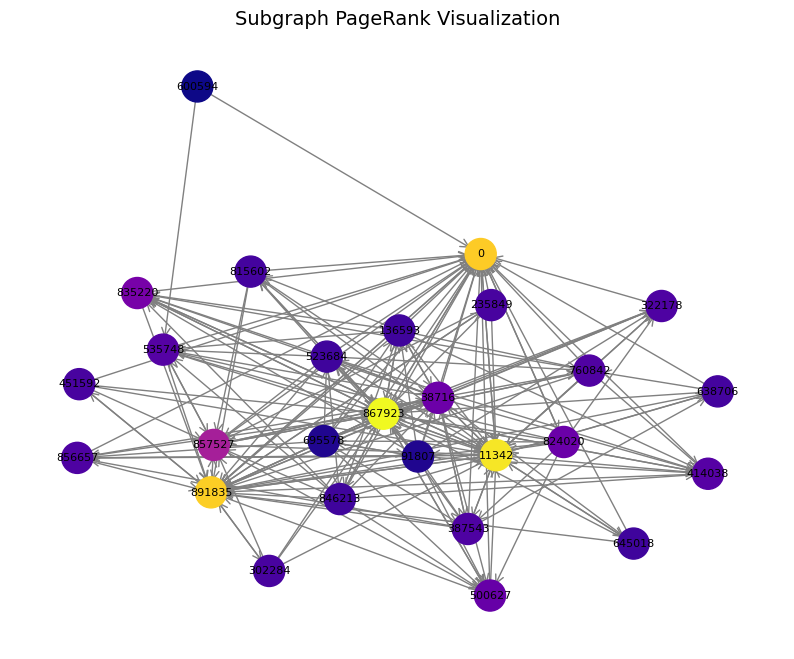
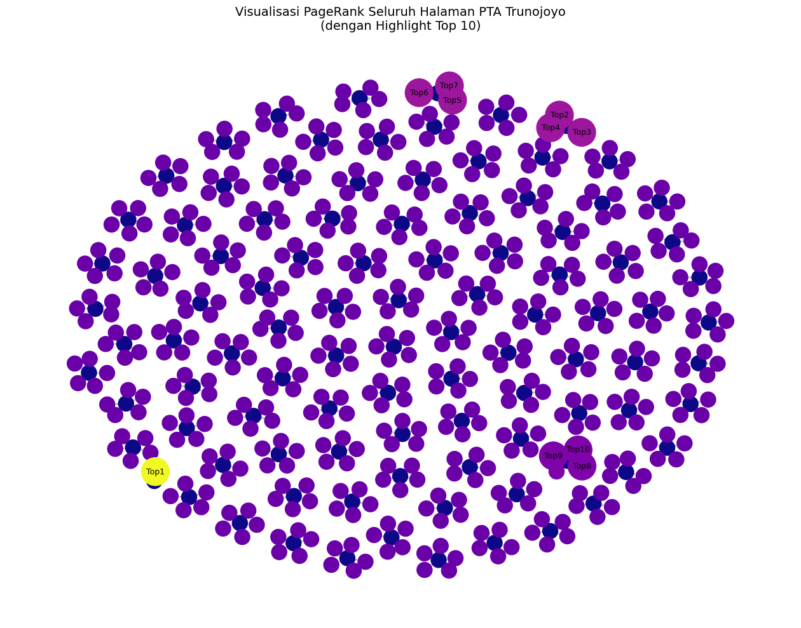
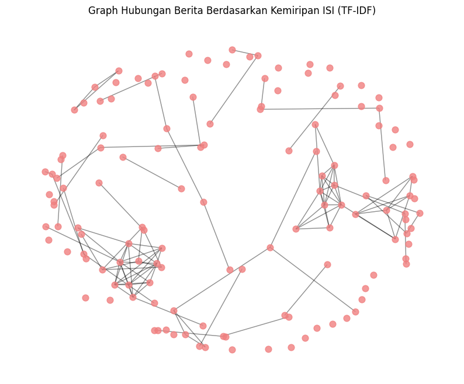

Page Rank#
PageRank adalah algoritma yang digunakan untuk menghitung tingkat kepentingan atau pengaruh suatu halaman (node) berdasarkan banyaknya dan kekuatan hubungan (edge) dengan halaman lain.
import networkx as nx
import matplotlib.pyplot as plt
import pandas as pd
# --- Baca file ---
# Ambil hanya dua kolom pertama (FromNodeId, ToNodeId)
edges = pd.read_csv("data_graph.txt", sep="\t", comment="#", names=["From", "To"])
# --- Buat graph terarah ---
G = nx.from_pandas_edgelist(edges, source="From", target="To", create_using=nx.DiGraph())
print(f"Jumlah node: {G.number_of_nodes()}")
print(f"Jumlah edge: {G.number_of_edges()}")
# --- Ambil sebagian kecil (subgraph) untuk ditampilkan ---
# Misalnya ambil node dengan ID 0 dan semua tetangganya
sub_nodes = set([0] + list(G.successors(0)) + list(G.predecessors(0)))
subgraph = G.subgraph(sub_nodes)
# --- Hitung PageRank untuk subgraph ---
pagerank = nx.pagerank(subgraph, alpha=0.85)
# --- Visualisasi ---
plt.figure(figsize=(10, 8))
pos = nx.spring_layout(subgraph, seed=42)
nx.draw_networkx_nodes(subgraph, pos, node_size=500, node_color=list(pagerank.values()), cmap='plasma')
nx.draw_networkx_edges(subgraph, pos, arrowstyle='->', arrowsize=15, edge_color='gray')
nx.draw_networkx_labels(subgraph, pos, font_size=8, font_color='black')
plt.title("Subgraph PageRank Visualization", fontsize=14)
plt.axis("off")
plt.show()
Jumlah node: 10000
Jumlah edge: 78323

import networkx as nx
import pandas as pd
# --- Baca file ---
edges = pd.read_csv("data_graph.txt", sep="\t", comment="#", names=["From", "To"])
# --- Buat graph terarah ---
G = nx.from_pandas_edgelist(edges, source="From", target="To", create_using=nx.DiGraph())
print(f"Jumlah node: {G.number_of_nodes()}")
print(f"Jumlah edge: {G.number_of_edges()}")
# --- Hitung PageRank ---
pagerank = nx.pagerank(G, alpha=0.85)
# --- Ambil 5 node dengan nilai PageRank tertinggi ---
top_5 = sorted(pagerank.items(), key=lambda x: x[1], reverse=True)[:5]
# --- Tampilkan hasil ---
print("\nTop 5 PageRank Nodes:")
print("======================")
for node_id, score in top_5:
print(f"Node ID: {node_id} | PageRank: {score:.6f}")
Jumlah node: 10000
Jumlah edge: 78323
Top 5 PageRank Nodes:
======================
Node ID: 486980 | PageRank: 0.006515
Node ID: 285814 | PageRank: 0.004633
Node ID: 226374 | PageRank: 0.003301
Node ID: 163075 | PageRank: 0.003288
Node ID: 555924 | PageRank: 0.002756
Pagerank Data PTA#
import networkx as nx
import matplotlib.pyplot as plt
import pandas as pd
# --- Baca data ---
df = pd.read_csv("pta_links.csv", encoding="utf-8")
# --- Buat graph berarah dari kolom page dan link_keluar ---
G = nx.from_pandas_edgelist(df, source="page", target="link_keluar", create_using=nx.DiGraph())
print(f"Jumlah node: {G.number_of_nodes()}")
print(f"Jumlah edge: {G.number_of_edges()}")
# --- Hitung PageRank ---
pagerank_scores = nx.pagerank(G, alpha=0.85)
# --- Ambil 10 node dengan PageRank tertinggi ---
top_10 = sorted(pagerank_scores.items(), key=lambda x: x[1], reverse=True)[:10]
print("\nTop 10 halaman berdasarkan PageRank:")
for i, (node, score) in enumerate(top_10, start=1):
print(f"{i}. {node} → {score:.6f}")
# --- Visualisasi seluruh graph ---
plt.figure(figsize=(16, 12))
pos = nx.spring_layout(G, seed=42)
# Warna semua node sesuai skala PageRank
node_colors = [pagerank_scores[n] for n in G.nodes()]
node_sizes = [300 if n not in dict(top_10) else 1000 for n in G.nodes()] # besar untuk top 10
# Gambar semua node
nx.draw_networkx_nodes(G, pos, node_size=node_sizes, node_color=node_colors, cmap='plasma')
# Gambar edge
nx.draw_networkx_edges(G, pos, alpha=0.3, arrows=True, edge_color='gray')
# Label hanya untuk top 10 biar tidak terlalu ramai
nx.draw_networkx_labels(G, pos, labels={n: f"Top{i+1}" for i, (n, _) in enumerate(top_10)}, font_size=9, font_color='black')
plt.title("Visualisasi PageRank Seluruh Halaman PTA Trunojoyo\n(dengan Highlight Top 10)", fontsize=14)
plt.axis("off")
plt.show()
Jumlah node: 579
Jumlah edge: 481
Top 10 halaman berdasarkan PageRank:
1. https://pta.trunojoyo.ac.id/welcome/detail/160351100011 → 0.002793
2. https://pta.trunojoyo.ac.id/welcome/detail/160281100012 → 0.001938
3. https://pta.trunojoyo.ac.id/welcome/detail/160281100013 → 0.001938
4. https://pta.trunojoyo.ac.id/welcome/detail/160281100002 → 0.001938
5. https://pta.trunojoyo.ac.id/welcome/detail/170361100010 → 0.001938
6. https://pta.trunojoyo.ac.id/welcome/detail/170361100001 → 0.001938
7. https://pta.trunojoyo.ac.id/welcome/detail/170361100003 → 0.001938
8. https://pta.trunojoyo.ac.id/welcome/detail/170491200035 → 0.001831
9. https://pta.trunojoyo.ac.id/welcome/detail/170491200036 → 0.001831
10. https://pta.trunojoyo.ac.id/welcome/detail/170491200031 → 0.001831

PageRank digunakan untuk mengukur tingkat kepentingan atau pengaruh setiap halaman pada jaringan situs PTA berdasarkan hubungan antarhalaman.
Dalam konteks ini, setiap halaman PTA dianggap sebagai node, sedangkan edge merepresentasikan hubungan tautan (link) antarhalaman yang saling terhubung.
Semakin banyak halaman lain yang menautkan ke suatu halaman, maka nilai PageRank halaman tersebut akan semakin tinggi.
Sepuluh (10) halaman teratas ditentukan berdasarkan nilai PageRank tertinggi, yang menunjukkan bahwa halaman-halaman tersebut merupakan halaman yang paling berpengaruh atau paling sering menjadi tujuan tautan dari halaman lainnya dalam jaringan situs PTA.
PageRank Data Berita#
import pandas as pd
import networkx as nx
from sklearn.feature_extraction.text import TfidfVectorizer
from sklearn.metrics.pairwise import cosine_similarity
import matplotlib.pyplot as plt
import nltk
from nltk.corpus import stopwords
# --- Download stopword Indonesia (sekali saja perlu) ---
nltk.download('stopwords')
# --- Ambil stopword Bahasa Indonesia ---
stop_words = stopwords.words('indonesian')
# --- Baca file ---
df = pd.read_csv("berita_detik_baru.csv")
# --- Pastikan kolom 'isi' dan 'link' ada ---
df = df.dropna(subset=["isi", "link"]).reset_index(drop=True)
# --- Hitung TF-IDF + Cosine Similarity berdasarkan kolom 'isi' ---
vectorizer = TfidfVectorizer(stop_words=stop_words, max_features=5000)
tfidf_matrix = vectorizer.fit_transform(df["isi"])
similarity = cosine_similarity(tfidf_matrix)
# --- Buat Graph berdasarkan kemiripan isi ---
G = nx.DiGraph()
for link in df["link"]:
G.add_node(link)
threshold = 0.2 # batas minimal kemiripan dianggap nyambung
for i in range(len(df)):
for j in range(len(df)):
if i != j and similarity[i, j] > threshold:
G.add_edge(df["link"][i], df["link"][j], weight=similarity[i, j])
print(f"Jumlah node: {G.number_of_nodes()}")
print(f"Jumlah edge: {G.number_of_edges()}")
# --- Hitung PageRank ---
pagerank_scores = nx.pagerank(G, alpha=0.85, weight="weight")
# --- Ambil 10 teratas ---
top10 = sorted(pagerank_scores.items(), key=lambda x: x[1], reverse=True)[:10]
print("\n🔝 Top 10 Berita Berdasarkan PageRank (Kemiripan ISI):\n")
for i, (link, score) in enumerate(top10, 1):
judul = df.loc[df["link"] == link, "judul"].values[0]
print(f"{i}. {judul}\n {link}\n Skor: {score:.5f}\n")
# --- Visualisasi Graph ---
plt.figure(figsize=(10, 8))
pos = nx.spring_layout(G, seed=42, k=0.3)
nx.draw_networkx_nodes(G, pos, node_size=60, node_color='lightcoral', alpha=0.8)
nx.draw_networkx_edges(G, pos, alpha=0.25, arrows=False)
plt.title("Graph Hubungan Berita Berdasarkan Kemiripan ISI (TF-IDF)", fontsize=12)
plt.axis("off")
plt.show()
[nltk_data] Downloading package stopwords to /root/nltk_data...
[nltk_data] Unzipping corpora/stopwords.zip.
/usr/local/lib/python3.12/dist-packages/sklearn/feature_extraction/text.py:402: UserWarning: Your stop_words may be inconsistent with your preprocessing. Tokenizing the stop words generated tokens ['baiknya', 'berkali', 'kali', 'kurangnya', 'mata', 'olah', 'sekurang', 'setidak', 'tama', 'tidaknya'] not in stop_words.
warnings.warn(
Jumlah node: 137
Jumlah edge: 218
🔝 Top 10 Berita Berdasarkan PageRank (Kemiripan ISI):
1. Video: Israel Lancarkan Serangan Darat-Udara ke Gaza, 70 Orang Tewas
https://20.detik.com/detikupdate/20250917-250917006/video-israel-lancarkan-serangan-darat-udara-ke-gaza-70-orang-tewas
Skor: 0.02059
2. Misteri Sosok Pembisik Rekening Dormant di Balik Penculikan Kacab Bank
https://news.detik.com/berita/d-8115821/misteri-sosok-pembisik-rekening-dormant-di-balik-penculikan-kacab-bank
Skor: 0.01806
3. 10 Fakta Perkara Kacab Bank Dibunuh: Motif hingga Peran 2 Tentara
https://news.detik.com/berita/d-8115792/10-fakta-perkara-kacab-bank-dibunuh-motif-hingga-peran-2-tentara
Skor: 0.01537
4. Hadiri Maulid Nabi, Fadli Zon Tekankan Nilai Budaya di Balik Tradisi Ini
https://news.detik.com/berita/d-8115519/hadiri-maulid-nabi-fadli-zon-tekankan-nilai-budaya-di-balik-tradisi-ini
Skor: 0.01530
5. Partner In Crime Juga Ditipu Dukun Pengganda Uang, Kesal Jatah Dikurangi
https://news.detik.com/berita/d-8115941/partner-in-crime-juga-ditipu-dukun-pengganda-uang-kesal-jatah-dikurangi
Skor: 0.01530
6. Green Satkamling di Dumai, Wujudkan Keamanan dan Penghijauan Lingkungan
https://news.detik.com/melindungi-tuah-marwah/d-8115511/green-satkamling-di-dumai-wujudkan-keamanan-dan-penghijauan-lingkungan
Skor: 0.01530
7. Trump Perpanjang Tunda Blokir TikTok di AS hingga Pertengahan Desember
https://news.detik.com/internasional/d-8115694/trump-perpanjang-tunda-blokir-tiktok-di-as-hingga-pertengahan-desember
Skor: 0.01530
8. Kronologi Mobil Boks Ditabrak Avanza hingga Terguling di Tol Jagorawi
https://news.detik.com/berita/d-8115979/kronologi-mobil-boks-ditabrak-avanza-hingga-terguling-di-tol-jagorawi
Skor: 0.01518
9. Video: Israel Lancarkan Serangan Darat-Udara ke Gaza, Ini Respons PBB
https://20.detik.com/detikupdate/20250917-250917068/video-israel-lancarkan-serangan-darat-udara-ke-gaza-ini-respons-pbb
Skor: 0.01447
10. Jaga Stabilitas Harga Pangan, Polres Rohul Salurkan 2 Ton Beras Murah
https://news.detik.com/melindungi-tuah-marwah/d-8115493/jaga-stabilitas-harga-pangan-polres-rohul-salurkan-2-ton-beras-murah
Skor: 0.01440

Dalam konteks ini, setiap berita dianggap sebagai node, sedangkan edge merepresentasikan hubungan kemiripan isi antarberita berdasarkan nilai cosine similarity.
Semakin banyak berita lain yang memiliki kemiripan tinggi dengan suatu berita, maka nilai PageRank berita tersebut semakin besar.
Sepuluh (10) berita teratas dipilih berdasarkan nilai PageRank tertinggi, yang menunjukkan bahwa berita-berita tersebut memiliki isi yang paling berpengaruh dan paling banyak terhubung dengan berita lainnya di dalam jaringan.